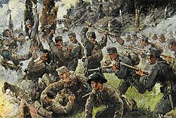
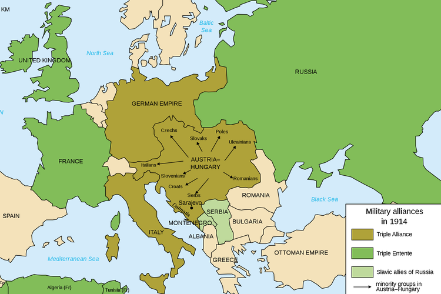
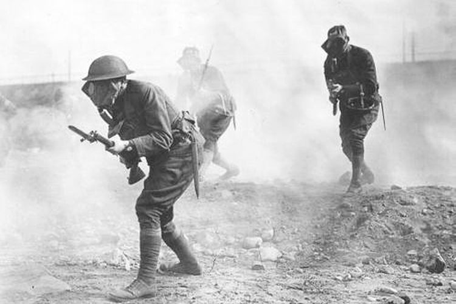
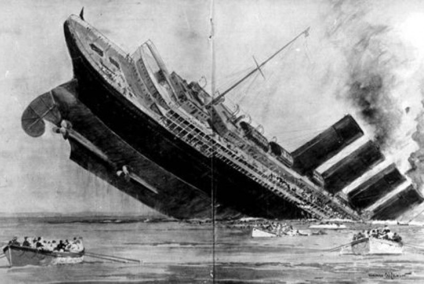
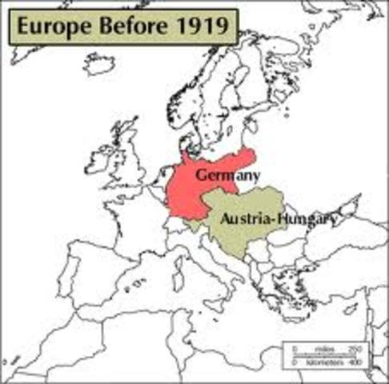
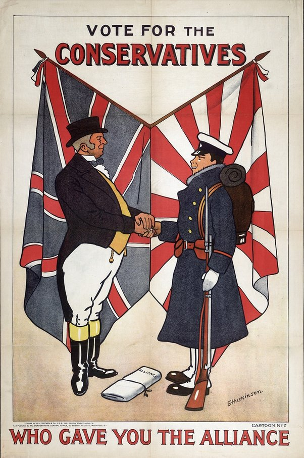

 Perang Dunia I merupakan peperangan global yang terpusat di Eropa dan dimulai pada 28 Juli 1914 sampai dengan 11 November 1918. Perang ini sering juga disebut dengan Perang Besar karena berakhir sampai dengan dimulainya Perang Dunia II. Perang itu melibatkan semua kekuatan besar dunia, yang terbagi menjadi dua aliansi bertentangan, yaitu Blok Sekutu (berdasarkan Triple Entente, terdiri atas Britania Raya, Prancis, dan Kekaisaran Rusia) dan Blok Sentral (berdasarkan Triple Alliance, terdiri atas Jerman, Austro-Hongaria, dan Italia). Namun, ketika Austrio-Hongaria melakukan serangan, persekutuan ini sementara bersifat defensif, Italia tidak ikut berperang).
Perang Dunia I terjadi di Eropa mulai tahun 1914 dan berakhir pada 1918. Salah satu faktor utama yang menyebabkan peperangan negara-negara Barat ini dipicu oleh persaingan industri dan militer antara Jerman dengan Britania Raya  Negara-negara yang kemudian merasakan memerlukan teman ketika berhadapan dengan musuh akhirnya membangun kubu-kubu (aliansi). Saat itu, ada dua kubu yang saling berhadapan, yaitu Triple Alliance dan Triple Entent. Perang Dunia I akhirnya meledak ketika putra mahkota Austro-Hongaria, Franz Ferdinand, terbunuh. Hal ini menyebabkan pihak Austro-Hongaria bersama Triple Alliance melakukan serangan terhadap Prancis. Dalang di balik peristiwa tersebut diduga dimotori oleh Serbia.
Britania Raya yang berusaha mendamaikan melalui dialog ternyata kalah suara dari Jerman, sedangkan Austro-Hongaria di pihak lain ingin berperang. Jerman bersama Austro-Hongaria melancarkan serangan ke Belgia yang terikat perjanjian dengan Prancis dan Britania Raya.  Hal ini memicu Prancis dan Britania Raya akhirnya harus mau ikut serta dalam perang. Pada 1915, Italia membelot ke Triple Entente dan meninggalkan Triple Alliance karena dijanjikan mendapat wilayah Dalmatia yang saat itu diduduki oleh Austro-Hongaria. Setelah itu, Turki Usmani memutuskan untuk bergabung bersama Triple Alliance karena merasa mempunyai musuh yang sama, yaitu Kekaisaran Rusia. Dengan demikian, Perang Dunia I melibatkan dua kubu aliansi, yaitu Triple Alliance yang dimotori oleh Jerman, Austro-Hongaria, Turki Usmani, dan Bulgaria, melawan Triple Entente yang dimotori oleh Britania Raya, Kekaisaran Rusia, Prancis, Italia, dan beberapa negara lainnya.
 Perang ini akhirnya meluas hingga melibatkan Amerika Serikat. Amerika mengecam tragedi tenggelamnya Kapal Lusitania pada 1915 yang di dalamnya terdapat warga negaranya. Kapal tersebut ternyata tenggelam akibat ulah serangan Jerman. Amerika akhirnya ikut turun ke peperangan dengan merapat ke Triple Entente. Kekaisaran Rusia ternyata memilih menarik diri di tengah peperangan, tepatnya pada 1917. Penarikan diri ini disebabkan oleh situasi negaranya yang tidak kondusif. Pada 1918, muncul Perjanjian Brest-Litovsk yang isinya menyatakan bahwa Kekaisaran Rusia lepas tangan dari Perang Dunia I. Selanjutnya, terjadi “Serangan Seratus Hari” pada 1918 yang diluncurkan kubu Triple Entente. Garis pertahanan Jerman di Front Barat mendapatkan serangan hebat. Jerman pun akhirnya menyerah. Pernyataan kekalahan itu akhirnya diikuti oleh negara-negara lain yang tergabung di Triple Alliance. Bulgaria, Turki Usmani, dan Austro-Hongaria secara bergiliran akhirnya mengibarkan bendera putih. Perang Dunia I pun resmi berhenti pada 11 November 1918.
Gambaran mengenai proses menuju teater konflik Perang Dunia I memuat peristiwa, antara lain:
 Sebuah upaya dari Otto von Bismarck, Kanselir Jerman (1871–1890), dalam membangun jaring diplomatik internasional sebagai desain dari permainan politiknya untuk mengamankan Jerman. Aliansi ini bertujuan untuk menghambat ekspansi dari Kekaisaran Rusia. Selain itu, aliansi ini juga didirikan sebagai dukungan Jerman terhadap Austria yang sedang berseteru dengan Kekaisaran Rusia, yang tengah mengupayakan ekspansi di Balkan.
Jaring diplomatik Otto von Bismarck, yang elemen kuncinya terletak di Triple Alliance menghubungkan antara Jerman, Austro–Hongaria, dan Italia. Tujuan utama dari pembentukan aliansi ini adalah untuk terus mengisolasi Prancis, yang dikalahkan oleh Konfederasi Jerman Utara (Kerajaan Prusia) pada 1870 dalam seri Perang Franco-Prussia. Kesediaan Italia bergabung karena ambisinya atas Mediterania dan Afrika yang dikonfrontasi oleh Prancis.
Perjanjian dilakukan antara Jerman dan Kekaisaran Rusia, yang isinya keduanya berjanji akan bersikap netral jika salah satu terlibat perang dengan salah satu kekuatan besar Eropa, yaitu Britania Raya dan Prancis.
Kehadirannya di atas singgasana pada 1888 telah mengubah situasi politik internasional secara drastis. Setelah dia memecat Otto von Bismarck pada 1890, Jerman mengeluarkan kebijakan internasional yang baru. Hal ini terjadi bukan dikarenakan sang kaisar tergolong manusia haus darah yang selalu menginginkan perang. Namun, lebih kepada sikap inferiotasnya terhadap kekuasaan Britania Raya di kawasan kontinental sebagai penyangga keseimbangan kekuatan di Eropa. Kaisar Wilhelm menjadikan Jerman sebagai raksasa ekonomi, militer, dan maritim di kawasan kontinental Eropa, sehingga dia harus berani membuat kebijakan Weltpolitik, yaitu suatu kebijakan yang lebih ambisius dan agresif dibandingkan kebijakan buatan Kanselir Bismarck. Kebijakan itu pada akhirnya memicu reaksi defensif lebih cepat dari negara lain yang sebelumnya merasa terancam oleh kehadiran Jerman sebagai kekuatan baru di Eropa kontinental, yaitu Britania Raya. Selain itu, Britania Raya telah merancang skema lebih cepat untuk meruntuhkan Jerman melalui Perang Dunia I.
Kaisar Wilhelm II menolak memperbarui Perjanjian Reasuransi setelah memecat Bismarck. Hal ini dipandang sebagai blunder dalam diplomasi. Kesalahan fatal ini pun membuat Jerman gagal mengisolasi Prancis, yang beraliansi dengan Kekisaran Rusia setelahnya. Satu-satunya harapan aliansi Jerman adalah Austro-Hongaria.
Kebijakan agresif Kaisar Wilhelm II memicu penandatanganan perjanjian militer yang dibangun sebagai kerja sama militer saling menguntungkan melawan Jerman, yang sudah diprediksi oleh Otto von Bismarck, yaitu antara Kekaisaran Rusia dan Republik Prancis. Hal ini dikarenakan kebodohan Kaisar Wilhelm II yang enggan memperbarui Perjanjian Reasuransi dengan Kekaisaran Rusia, padahal Kekaisaran Rusia sudah menawarkan perpanjangan kontrak dengan Wilhelm II, yang dimungkinkan akan mengamankan Jerman di front timur. Prancis lantas merespons dengan cepat. Aliansi ini praktis mengakhiri sistem diplomatik yang didesain oleh Bismarck. Prancis pun telah keluar dari zona isolasi yang dirancang oleh Jerman melalui Triple Alliance.
Suatu kebijakan yang diterapkan oleh Britania Raya sejak hasil Kongres Wina yang membangun era Pax Britannica sebagai satu-satunya penguasa jalur maritim dan berlangsung antara 1860–1904. Istilah ini populer tahun 1891. Britania Raya adalah kekuatan nonaliansi Eropa satu-satunya yang mampu menikmati keamanan sebagai negara pemilik armada laut terbesar di dunia yang terlindungi oleh hegemoninya atas laut karena posisinya sebagai negara maritim.
 Britania Raya dan Jepang menandatangani perjanjian bahwa Jepang akan bersikap netral untuk mengkonter adanya kemungkinan ancaman Kekaisaran Rusia terhadap India (wilayah protektorat Britania Raya). Peristiwa ini menandai berakhirnya masa splendid isolation.
Berkat hegemoni ekonomi, laut, dan kolonial, Britania Raya sejak lama tidak membutuhkan aliansi dengan negara-negara kekuatan besar di kawasan Eropa kontinental, yaitu antara tahun 1860–1904. Istilah yang sangat umum saat itu adalah kebijakan splendid isolation yang diperkenalkan oleh Viscount Goschen, seorang First Lord of Admiralty (1871–1874, 1895–1900). Britania Raya sudah mandiri secara ekonomi dan militer lantaran hegemoninya telah menggenggam seperempat dunia. Namun, kebijakan internasional Jerman, Weltpolitik, merupakan tantangan besar yang memaksa Britania Raya mencari dukungan internasional untuk mengukuhkan hegemoninya melalui perjanjian. Selanjutnya, setelah menyelesaikan perselisihan terkait koloni dalam Insiden Fashoda yang memperebutkan Mesir dan Sudan (kawasan Sungai Nil), keduanya setuju menandatangani Entente Cordiale, yang mengawali periode aliansi Britania Raya–Prancis melawan agresi Jerman pada waktu mendatang (melalui propaganda Entente). Prancis menerima hak penguasaan Britania Raya atas Sudan, sementara Britania Raya mengakui kontrol Prancis atas Maroko. Inisiasi Entente Cordiale dilakukan lantaran Britania Raya sudah mulai terancam hegemoninya di laut karena Jerman sudah mulai membangun armada laut. Konflik ini dikenal dengan istilah Anglo-German Naval Arms Race (Perlombaan Armada Laut Britania Raya–Jerman).
Saat mengunjungi Tangier, Maroko, Kaisar Wilhelm II, menyatakan menentang kolonisasi Prancis di Maroko. Jerman kemudian mendesak kemerdekaan Maroko dari Prancis. Sementara itu, Britania Raya dan Italia mendukung dominasi Prancis di Maroko dan Tunisia. Tantangan Jerman ini memicu diadakannya Konferensi Algeciras (1906) yang didukung oleh Britania Raya. Jerman di dalam konferensi ini terisolasi, sedangkan Prancis mendapatkan dukungan penuh dari Britania Raya. Entente Cordiale pun ada gunanya. Pandangan Jerman yang mengintervensi kemerdekaan Maroko, yang notabene koloni Prancis, inilah yang membuat Britania Raya, Kekaisaran Rusia, dan Amerika Serikat memandang Jerman sebagai ancaman yang berpotensi menaklukkan Eropa. Jika tidak segera diatasi dengan taktik diplomatik berupa encirclement (pengepungan untuk mengisolasi), Jerman mampu menjadi penguasa dunia.
Britania Raya dan Kekaisaran Rusia akhirnya menyepakati untuk menyudahi konflik teritorial mereka di kawasan Balkan dan Asia Tengah di bawah tekanan Prancis sebagai mediator. Perjanjian ini nantinya yang mengikat sempurna tiga kekuatan Eropa untuk menjalin satu kekuatan sebagai Triple Entente melawan Jerman dan Triple Alliance-nya. Blok negara besar hegemoni Eropa ini nantinya lebih dikenal sebagai Allied Force (Blok Sekutu). Perjanjian ini ditandatangani di Paris.
Dengan memanfaatkan situasi yang sulit di dalam negeri Kekaisaran Turki Ottoman, serta banyaknya wilayah protektoratnya yang melepaskan diri satu per satu dan memerdekakan diri sebagai negara otonom, Austro-Hongaria menganeksasi Bosnia-Herzegovina. Dikarenakan Jerman mendukung sekutunya, Kekaisaran Rusia terpaksa menyerah terhadap agresi Austro-Hongaria, serta tidak mau mengambil risiko dengan mundur dari tantangan yang dilayangkan oleh Austro-Hongaria. Pada waktu itu, Britania Raya maupun Prancis di sisi lain tidak ada yang berniat mendukung Kekaisaran Rusia lantaran memungkinkan gerakan mereka akanmemicu konflik di kawasan Balkan, terlebih jika Kekaisaran Turki-Ottoman terprovokasi.
Ini adalah krisis internasional kedua yang terjadi di Maroko. Dengan mengirim kapal perang ke pelabuhan Agadir di Maroko, Jerman telah memicu krisis diplomatik, meskipun pada akhirnya dibuat perjanjian diplomatik yang mengakhiri krisis tersebut. Namun, Insiden Agadir ini telah menyulut konfrontasi antara Prancis dengan Jerman.
Dua Perang Balkan berturut-berturut yang melibatkan Turki Ottoman, Serbia, Yunani, Montenegro, dan Bulgaria berakhir dengan Perjanjian Bucharest tahun 1913. Perang itu menyebabkan pergeseran situasi di kawasan Balkan. Wilayah Turki-Ottoman di Balkan pun semakin menyempit, sehingga disisihkan menjadi daerah kecil di sekitar Istanbul. Serbia (sekutu Kekaisaran Rusia dan pembela hak bangsa Slavia di wilayah Kekaisaran Austro-Hongaria) dilebur sebagai negara utama bangsa Slavia di kawasan itu. Austro-Hongaria pun berkesimpulan bahwa pilihannya hanyalah perang yang mampu mencegah Serbia sebagai garda pemangku hak-hak rakyat Slavia untuk memberontak melawan hegemoni Kekaisaran Hansburg dari Austro-Hongaria, yang mendapat dukungan penuh dari bangsa Slavia raksasa, Kekaisaran Rusia. Sebabnya, Kekaisaran Rusia akan mengintervensi tindakan Austro-Hongaria apabila menyerang Serbia. Kekaisaran Austro-Hongaria pun menunggu momen yang tepat agar bisa memicu perang antara Austro-Hongaria dan Kerajaan Serbia.
Pada 28 Juni 1914, Adipati Agung (Archduke) Franz Ferdinand, pewaris takhta Kekaisaran Austro-Hongaria, dibunuh seorang nasionalis Bosnia-Serbia dari organisasi teroris-nasionalis Serbia The Black Hand, bernama Gavrilo Princip. Aksi yang dilakukan pemuda berusia 19 tahun ini berakibat fatal hingga memicu perang global. Desain buatan Raja Edward VII pun berjalan. Jalinan aliansi negara-negara super power Eropa telah menjalankan fungsi komitmennya sebagai konsekuensi diplomatik yang membawa insiden lokal ini menuju konflik global di Eropa dan dunia.
28 Juni 1914: Serangan teroris Serbia The Black Hand di Sarjevo hingga membunuh Pangeran Franz Ferdinand oleh pemuda 19 tahun, Gavrillo Princip.
23 Juli 1914: Setelah mendapat jaminan dukungan dari Jerman, Austro-Hongaria mengultimatum Serbia.
28 Juli 1914: Austro-Hongaria menyatakan perang terhadap Serbia.
30 Juli 1914: Kekaisaran Rusia mulai memobilisasi militer secara serempak.
1 Agustus 1914: Sebagai respon mobilisasi militer Kekaisaran Rusia, Jerman menyatakan perang terhadap Kekaisaran Rusia, Prancis juga mulai memobilisasi militernya.
3 Agustus 1914: Sebagai respon terhadap Prancis, Jerman menyatakan perang terhadap Prancis.
4 Agustus 1914: Jerman menginvasi Belgia sebagai bagian dari Schlieffen Plan. Britania Raya pun menanggapi aksi Jerman ini dengan menyatakan perang terhadap Jerman, sehingga seluruh kekuatan dari Triple Entente terjun dalam kancah Perang Dunia Pertama. Jerman hanya didukung Austro-Hongaria.